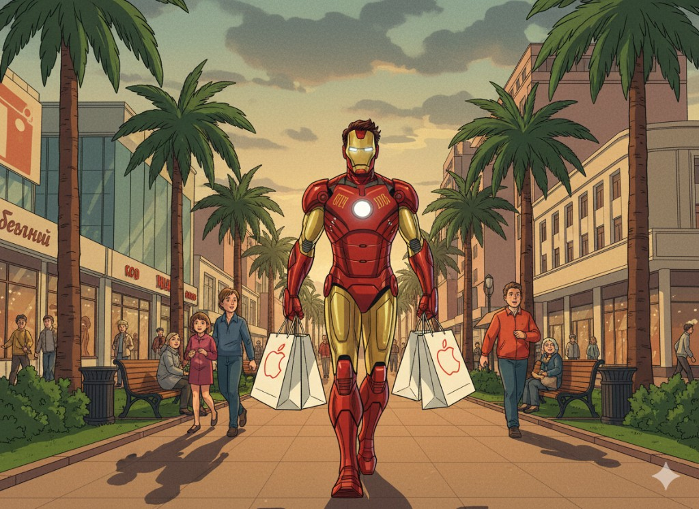

iPhone
Дисплеи, аккумуляторы, разъёмы, камеры, Face ID, восстановление после падения и влаги, прошивка.
Ремонт и обслуживание всей линейки Apple — от диагностики до сложного платного ремонта.
Напишите модель и что случилось — например «разбил экран на 13 про» или «залил макбук эйр». Цена указана вместе с работой.
Ремонтируем не только их: iPad, Apple Watch, iMac, ноутбуки других марок и системные блоки. Залили технику?
Подбор выше — по всей технике, на которую у нас есть точный прайс. Что не попало в список, тоже ремонтируем: цену скажем после осмотра, диагностика бесплатная.
Дисплеи, аккумуляторы, разъёмы, камеры, Face ID, восстановление после падения и влаги, прошивка.
Стекло, дисплейный модуль, батарея, разъём зарядки, кнопки, программные сбои.
Клавиатуры, матрицы, SSD, чистка и термопаста, материнские платы, залитие жидкостью.
Стекло, аккумулятор, кнопки, корпус. Оценка целесообразности ремонта — честно.
По ремонту, выбору техники и ПО — бесплатно, в любой удобной форме: в сервисе, по телефону, в Telegram.
Полная проверка устройства перед ремонтом. Объясняем, что сломано и сколько будет стоить.
В большинстве случаев диагностика бесплатна. Исключения — iMac и Apple Watch (сложная разборка), а также устройства после влаги, когда без ремонта по ходу диагностики нельзя оценить перспективы.
Склад популярных комплектующих — многие ремонты в день обращения или на следующий.
